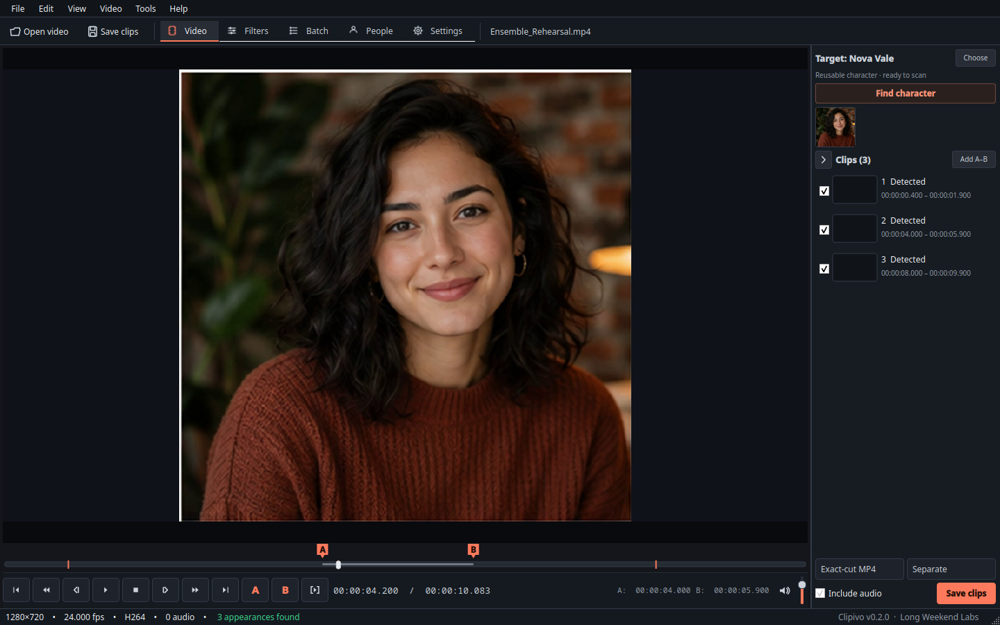
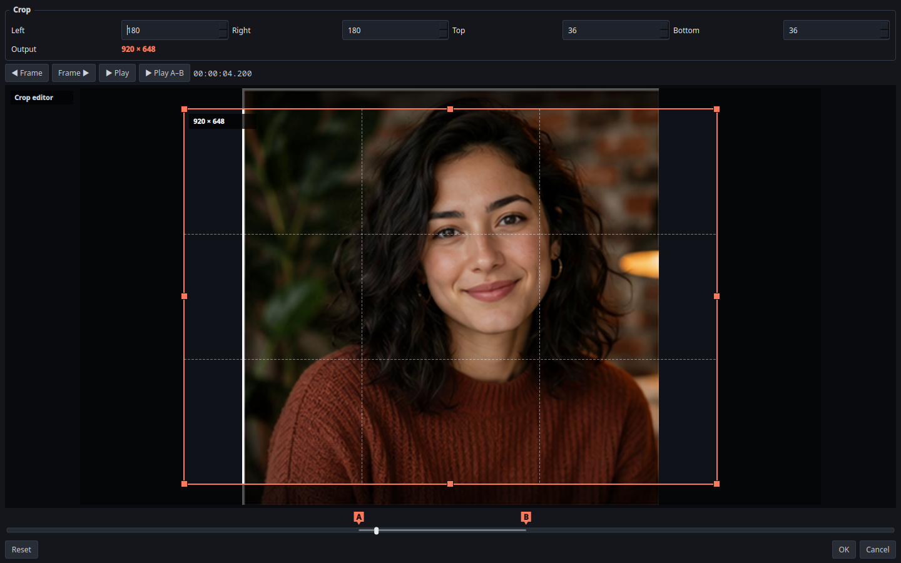

Local-first video cutting
Every appearance. Already cut.
Teach Clipivo a face, point it at a folder of videos, and export every appearance as separate clips or a compilation. Or use the same editor as a precise manual cutter.

Detected entrances stay visible on the timeline, ready to review and cut.

Filter chain
Shape the clip before it leaves.
Build an ordered chain with crop, rotation, vertical flip, frame rate, contrast and color balance. Crop stays synchronized between numeric margins and draggable on-picture handles.